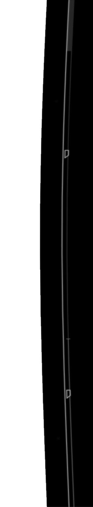

JustineTolin$root/
⧫︎❒︎□︎♎︎◆︎♓︎
🏱︎□︎♐︎□︎●︎
💧︎🙵⬧︎ 🕮︎ ☜︎⌧︎♏︎
✌︎♌︎⧫︎ 💣︎
👍︎⧫︎♋︎♍︎⧫︎
⚐︎❖︎♏︎❒︎♋︎■︎♑︎
Root
▲
neum
System Fatal Error
Social Error 604
Access restricted
Social Media Links are unavailable just for you.
System can't socialize to user.
Reason:
User too sosyal
Initiating System Reboot